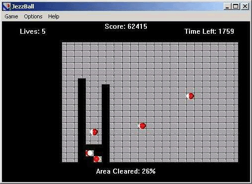

Home Page
F.A.Qs
Statistical Charts
Past Contests
Scheduled Contests
Award Contest
| Online Judge | Problem Set | Authors | Online Contests | User | ||||||
|---|---|---|---|---|---|---|---|---|---|---|
| Web Board Home Page F.A.Qs Statistical Charts | Current Contest Past Contests Scheduled Contests Award Contest | |||||||||
|
Language: Jezzball
Description  “JezzBall is a computer game in which red-and-white ‘atoms’ bounce about a rectangular field of play. The player advances to later levels (with correspondingly higher numbers of atoms and lives) by containing the atoms in progressively smaller spaces, until at least 75% of the area is blocked off.” (wikipedia.org) The picture to the right is a screenshot from the original game, where the player has already covered some space (the black part). In this problem we will consider a slightly different, non-discrete, version of the game. That is, while the length unit is still pixels, you should treat them as non-discrete in the sense that all objects can be at non-integer coordinates and all movements are continuous. The size of the playing field will be 1024 × 768 pixels. The atoms that bounce around will be infinitely thin (and not round balls like in the screenshot). The atoms will move at a constant speed and only change direction when hitting the edge of the playing field (x-coordinate 0 and 1024 or y-coordinate 0 and 768), where they bounce without loss of energy. The atoms do not hit each other. The player can divide the playing field in two by shooting a horizontal or vertical ray from (in this problem) a fixed point on the playing field. The ray will then extend in both directions simultaneously (up and down for vertical rays, or left and right for horizontal rays) at a uniform speed (in this problem always 200 pixels per second). The rays will also be infinitely thin. If no atom touches any part of the ray while it’s still being extended, the field has successfully been divided. Otherwise the player loses a life. If an atom touches the endpoint of an extending edge, this will not be counted as a hit. Also, if an atom hits the ray at the same instant it has finished extending, this will also not count as a hit. Write a program that determines the minimum time the player must wait before he can start extending a ray so that an atom will not hit it before the ray has been completed. Input Each test case starts with a line containing a single integer n, the number of atoms (1 ≤ n ≤ 10). Then follows a line containing two integers, x and y, the position where the two ray ends will start extending from (0 < x < 1024, 0 < y < 768). Then n lines follow, each containing four integers, x, y, vx and vy describing the initial position and speed of an atom (0 < x < 1024, 0 < y < 768, 1 ≤ |vx| ≤ 200, 1 ≤ |vy| ≤ 200). The speed of the atom in the x direction is given by vx, and the speed in the y direction is given by vy. All positions in each input will be distinct. The input is terminated by a case where n = 0, which should not be processed. There will be at most 25 test cases. Output For each test case, output the minimum time (with exactly 5 decimal digits) until the player can extend either a horizontal or vertical ray without an atom colliding with it while it is being drawn. The input will be constructed so that the first time this occurs will be during an open interval at least 10−5 seconds long. If no such interval is found during the first 10000 seconds, output “Never” (without quotes). Sample Input 3 700 420 360 290 170 44 900 150 -53 20 890 100 130 -100 4 10 10 1 1 192 144 513 385 192 144 1023 767 -192 -144 511 383 -192 -144 0 Sample Output 2.80094 Never Source |
[Submit] [Go Back] [Status] [Discuss]
All Rights Reserved 2003-2013 Ying Fuchen,Xu Pengcheng,Xie Di
Any problem, Please Contact Administrator